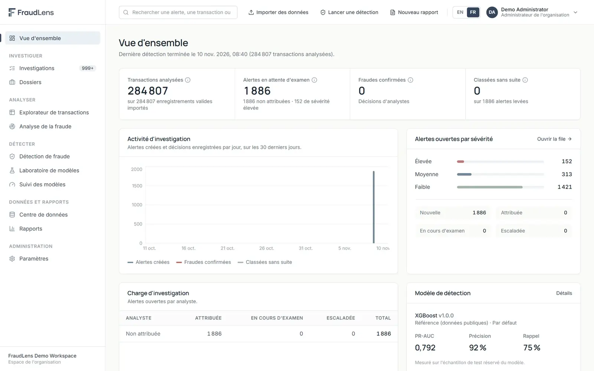

FraudLens
Une plateforme multi-organisations qui transforme des fichiers de transactions en alertes de fraude priorisées et expliquées, et offre aux analystes un espace structuré pour les investiguer.

Les captures montrent l'application en fonctionnement sur un espace de démonstration construit à partir d'un jeu de données public.
La problématique
Les équipes antifraude reçoivent des données de transactions sous des formats variés, issues de nombreux systèmes. Les modèles sont souvent appliqués à des données sur lesquelles ils n'ont jamais été entraînés, les alertes arrivent sans explication, et la frontière entre le score d'un modèle et la décision confirmée d'un analyste se brouille dans les rapports.
FraudLens repose sur trois principes : vérifier les données avant de les scorer, expliquer chaque alerte, et séparer les signaux des modèles des décisions des analystes.
Objectifs
- Permettre à toute organisation d'importer ses propres données de transactions, quel que soit leur format, sans perdre ni modifier silencieusement d'enregistrements.
- Empêcher qu'un modèle soit appliqué à des données qu'il ne peut pas légitimement scorer.
- Concentrer le temps des analystes sur les alertes les plus importantes, avec les raisons de chacune.
- Conserver un historique complet et infalsifiable de qui a décidé quoi, et pourquoi.
Fonctionnement
- Inscription
- Import et mapping
- Validation
- Compatibilité
- Détection
- Investigation et décision
- Rapports et suivi
- Import et validation des donnéesFichiers CSV de tout format ; signification des colonnes suggérée puis confirmée par l'utilisateur ; enregistrements invalides mis de côté avec leur motif, jamais supprimés.
- Contrôles de compatibilitéAvant le scoring, la plateforme vérifie que les données contiennent toutes les variables requises et ressemblent aux données d'entraînement.
- DétectionDes modèles approuvés et des règles métier configurables scorent chaque transaction et produisent des alertes priorisées.
- InvestigationFile d'alertes, explications SHAP, dossiers, justification écrite obligatoire des décisions et validation par un analyste senior.
- Model Lab et suiviRegistre et approbation des modèles, courbes précision–rappel et ROC, analyse des seuils, fiches modèles et indicateurs de dérive.
- GouvernanceRapports datés en PDF/CSV, en anglais ou en français, et historique d'audit en ajout seul.
Modèles et évaluation
Les modèles de référence ont été entraînés sur le jeu de données public Credit Card Fraud Detection (284 807 transactions, 492 fraudes) avec un découpage temporel. Les hyperparamètres, le traitement du déséquilibre des classes et le seuil d'alerte ont été choisis sur une partition de validation ; la partition de test n'a été utilisée qu'une fois.
| Modèle | PR-AUC | Précision | Rappel |
|---|---|---|---|
| Random Forest | 0,811 | 90,3 % | 74,7 % |
| XGBoost | 0,792 | 91,8 % | 74,7 % |
| LightGBM | 0,748 | 94,4 % | 68,0 % |
| Régression logistique | 0,747 | 96,1 % | 65,3 % |
| Isolation Forest (non supervisé) | 0,054 | 8,9 % | 46,7 % |
Partition de test : 56 962 transactions, 75 fraudes. La précision, le rappel et la PR-AUC sont présentés plutôt que l'exactitude, car la fraude représente environ 0,17 % des transactions.
Ma contribution
J'ai conçu et développé FraudLens de bout en bout : le pipeline d'import et de validation des données, l'entraînement et l'évaluation des modèles sur des données déséquilibrées, les explications SHAP, le backend FastAPI et le schéma PostgreSQL, ainsi que l'interface React bilingue.
Le code source est privé. Le dépôt GitHub public présente le produit, son architecture, sa base de données et des captures d'écran.
Captures d'écran
Certaines captures montrent l'interface en anglais ; l'application est entièrement disponible en français.
Technologies
- Python
- pandas
- NumPy
- scikit-learn
- XGBoost
- LightGBM
- imbalanced-learn
- SHAP
- FastAPI
- Pydantic
- SQLAlchemy
- Alembic
- PostgreSQL
- React
- TypeScript
- Vite
- Tailwind CSS
- Recharts
- i18next
- ReportLab